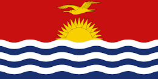
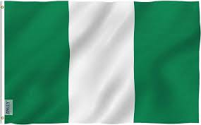

Alemania es un país de Europa occidental con un paisaje de bosques, ríos, cadenas montañosas y playas en el mar del Norte. Tiene más de 2 milenios de historia. Berlín, su capital, cuenta con sitios de arte y vida nocturna, la Puerta de Brandeburgo y muchos sitios relacionados con la Segunda Guerra Mundial. Múnich es conocida por el Oktoberfest y los salones de la cerveza, incluido el Hofbräuhaus del siglo XVI.
 Alemania
Alemania
Francia, en Europa Occidental, abarca ciudades medievales, villas alpinas y playas mediterráneas. París, su capital, es famosa por sus firmas de alta costura, los museos de arte clásico, como el Louvre, y monumentos como la Torre Eiffel. El país también es reconocido por sus vinos y su gastronomía sofisticada.
 Francia
Francia
España, país de la península ibérica de Europa, incluye 17 regiones autónomas con diversas características geográficas y culturales. En Madrid, su capital, se encuentra el Palacio Real y el Museo del Prado, que alberga obras de maestros europeos. Segovia tiene un castillo medieval (el Alcázar) y un acueducto romano intacto
 España
España
Portugal es un país del sur de Europa en la península ibérica, que limita con España. Su ubicación en el océano Atlántico influyó en muchos aspectos de su cultura: el bacalao en sal y las sardinas a la parrilla son platos nacionales, las playas del Algarve son un importante destino y gran parte de la arquitectura de la nación data de los siglos XVI al XIX, épocas en las que Portugal tuvo un poderoso imperio marítimo.
 Portugal
Portugal
Italia, país europeo con una larga costa mediterránea, influyó considerablemente en la cultura y la cocina occidental. Su capital, Roma, es hogar del Vaticano, de ruinas antiguas y de obras de arte emblemáticas. Otras ciudades importantes son Florencia, con obras maestras del renacimiento, como el "David" de Miguel Ángel y el Domo de Brunelleschi; Venecia, la ciudad de los canales; y Milán, la capital italiana de la moda.
 Italia
Italia
China es una nación muy poblada de Asia Oriental cuyos vastos paisajes abarcan praderas, desiertos, montañas, lagos, ríos y más de 14,000 km de costa. La capital, Pekín, mezcla la arquitectura moderna con los sitios históricos como el complejo del palacio de la Ciudad Prohibida y la plaza de Tiananmén. Shanghái es un centro financiero global adornado con rascacielos. La icónica Gran Muralla China recorre el norte del país de este a oeste.
 China
China
Japón es una nación insular del océano Pacífico con densas ciudades, palacios imperiales, parques nacionales montañosos y miles de santuarios y templos. El tren bala Shinkansen conecta las islas principales de Kyushu (con las playas subtropicales de Okinawa), Honshu (con Tokio y el memorial del bombardeo atómico en Hiroshima) y Hokkaido (famosa por el esquí). Tokio, la capital, es famosa por sus rascacielos, el comercio y la cultura pop.
 Japón
Japón
La República de Corea, comúnmente Corea del Sur es un Estado soberano de Asia Oriental, ubicado en la parte sur de la península de Corea. Limita al norte con Corea del Norte, con la cual integró un solo país hasta 1945
 Corea de sur
Corea de sur
La India es un vasto país de Asia del Sur con un terreno diverso que abarca desde las cumbres del Himalaya hasta la costa del océano Índico. Tiene una historia de más de 5 milenios. En el norte, los monumentos históricos del imperio Mogol incluyen el complejo del Fuerte Rojo de Delhi y la enorme mezquita de Jama Masjid, junto con el icónico mausoleo del Taj Mahal en Agra. Los peregrinos se bañan en el Ganges en Varanasi, y Rishikesh es un centro de yoga y una base para las excursiones al Himalaya.
 India
India
Tailandia es un país del Sudeste Asiático. Es famoso por sus playas tropicales, los opulentos palacios reales, las ruinas antiguas y los templos adornados con figuras de Buda. En Bangkok, la capital, un paisaje urbano ultramoderno se alza junto a las tranquilas comunidades a orillas de los canales y a los icónicos templos de Wat Arun, Wat Pho y el Templo del Buda de Esmeralda (Wat Phra Kaew). Entre los centros turísticos en las playas cercanas, se encuentran el desbordante Pattaya y el moderno Hua Hin.
 Tailandia
Tailandia
Australia es un país rodeado por los océanos Índico y Pacífico. Sus ciudades principales (Sídney, Brisbane, Melbourne, Perth y Adelaida) son costeras. Su capital, Canberra, se encuentra en el interior. El país es conocido por la Casa de la Ópera de Sídney, la Gran Barrera de Coral, una vasta área natural desértica conocida como Outback y especies animales únicas, como el canguro y el ornitorrinco.
 Australia
Australia
Nueva Zelanda es un país en el suroeste del océano Pacífico, que comprende dos islas principales, ambas marcadas por los volcanes y la glaciación. En la capital, Wellington, en la Isla Norte, se encuentra el extenso museo nacional Te Papa Tongarewa. El impresionante monte Victoria de Wellington, junto con Fiordland y Southern Lakes en la Isla Sur, representaron la mítica Tierra Media en la saga "El Señor de los Anillos" de Peter Jackson.
 Nueva Zelanda
Nueva Zelanda
Papúa Nueva Guinea, en la región suroeste del Pacífico, abarca la mitad oriental de Nueva Guinea y sus islas. El país tiene una inmensa diversidad cultural y biológica y es famoso por sus playas y sus arrecifes de coral. En el interior, tiene volcanes activos, el monte de granito Wilhelm, densos bosques pluviales y rutas de excursionismo, como el sendero de Kokoda. También hay aldeas tribales tradicionales, muchas de ellas con sus propios dialectos.
 Papua nueva
Papua nueva
Kiribati, una república insular del Pacífico Central, incluye 33 atolones de coral e islas que se extienden por el ecuador. Con lagunas y playas de arena blanca, muchas de sus islas están desiertas y ofrece una ubicación remota para la pesca, el buceo y la observación de aves. La poblada capital, Tarawa Sur, que consta de pequeños islotes, conserva restos de batallas de la Segunda Guerra Mundial que ocurrieron en sus costas, y es conocida por las danzas folclóricas y las artesanías
 KiribatiLas Islas Salomón son un país insular independiente situado en Oceanía, en la Melanesia tradicional. Forma parte de la Mancomunidad de Naciones.
 Islas salomon
Islas salomon
Sudáfrica es un país del extremo más meridional del continente africano que se caracteriza por sus numerosos ecosistemas distintos. En el interior, el Parque Nacional Kruger es un destino para el safari, poblado de caza mayor.
 Sudáfrica
Sudáfrica
Nigeria, oficialmente República Federal de Nigeria, es un país de África occidental, que limita con Níger al norte, con Chad en el nordeste, con Camerún en el este y con Benín en el oeste. Su costa sur está localizada en el Golfo de Guinea en el Océano Atlántico
 NigeriaKenia es un país de África Oriental con una costa en el océano Índico. Su territorio abarca sabana, terrenos en lagos, el espectacular Gran Valle del Rift y zonas montañosas altas. También alberga fauna, como leones, elefantes y rinocerontes.
KeniaMarruecos es un país de África del Norte que limita con el océano Atlántico y el mar Mediterráneo, y se distingue por las influencias culturales bereberes, árabes y europeas. La medina de Marrakech es un barrio medieval similar a un laberinto con entretenimiento en su plaza de Yamaa el Fna y los zocos (mercados) que venden cerámicas, joyas y lámparas de metal.
MarruecosEtiopía, en el Cuerno de África, es un escabroso país sin litoral dividido por el Gran Valle del Rift. Con hallazgos arqueológicos de más de 3 millones de años de antigüedad, es un lugar de cultura ancestral. Entre sus sitios importantes, se encuentra Lalibela con sus iglesias cristianas talladas en piedra de los siglos XII y XIII.
EtiopiaMéxico es un país entre los Estados Unidos y América Central, conocido por las playas en el Pacífico y el golfo de México, y su diverso paisaje de montañas, desiertos y selvas. Las ruinas antiguas, como Teotihuacán y la ciudad maya de Chichén Itzá, se distribuyen por el país, al igual que las ciudades de la época colonial española.
 Mexico
Mexico
Estados Unidos es un país de 50 estados que ocupa una extensa franja de América del Norte, con Alaska en el noroeste y Hawái que extiende la presencia del país en el océano Pacífico. Entre las principales ciudades de la costa del Atlántico, se encuentran Nueva York, un centro global financiero y cultural, y la capital Washington D. C. Chicago, metrópolis del medio oeste, es famosa por su influencia arquitectónica y, en la costa oeste, Hollywood, Los Ángeles, es famosa por la industria cinematográfica.
 EUA
EUA
Canadá es el país norteamericano que se extiende desde los Estados Unidos en el sur hasta el círculo polar ártico en el norte. Las ciudades principales incluyen la enorme Toronto, Vancouver, el centro cinematográfico de la costa oeste, las ciudades de habla francesa Montreal y Quebec, y la capital Ottawa.
 Canada
Canada
Brasil es un vasto país de Sudamérica que se extiende desde la Cuenca del Amazonas en el norte hasta los viñedos y las enormes cataratas del Iguazú en el sur. Río de Janeiro, simbolizado por su estatua de 38 m del Cristo Redentor sobre el cerro del Corcovado, es famoso por sus ajetreadas playas Copacabana e Ipanema, junto con su enorme y estridente festival del Carnaval, que cuenta con carros alegóricos, exuberantes disfraces y danza y música samba.
 Brasil
Brasil
Argentina es un país sudamericano de gran envergadura con un terreno que incluye las montañas de los Andes, lagos glaciales y praderas en las Pampas, la tierra tradicional de pastoreo de su famoso ganado. El país es conocido por el baile y la música del tango.
 Argentina
Argentina
| Europa | Asia | África | Oceanía | América |
|---|---|---|---|---|
| Alemania | China | Australia | Sudáfrica | México |
| Francia | Japon | Nueva Zelanda | Nigeria | Estados Unidos |
| España | Corea del sur | Papua Nueva Guinea | Kenia | Canadá |
| Portugal | India | Kiribati | Marruecos | Brasil |
| Italia | Tailandia | Islas Salomón | Etiopía | Argentina |